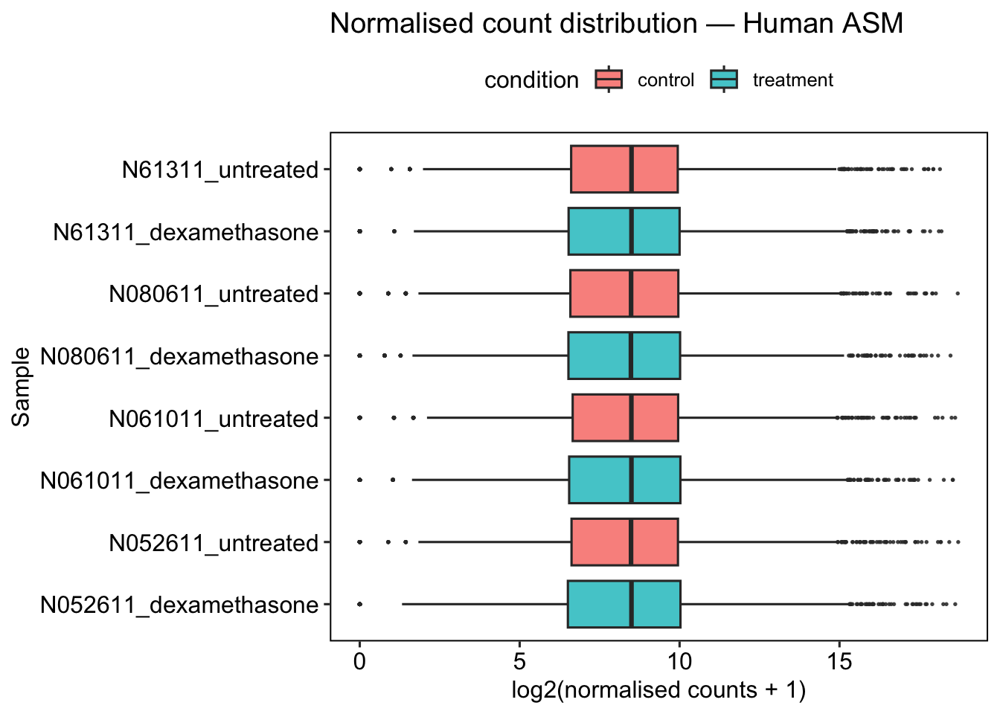
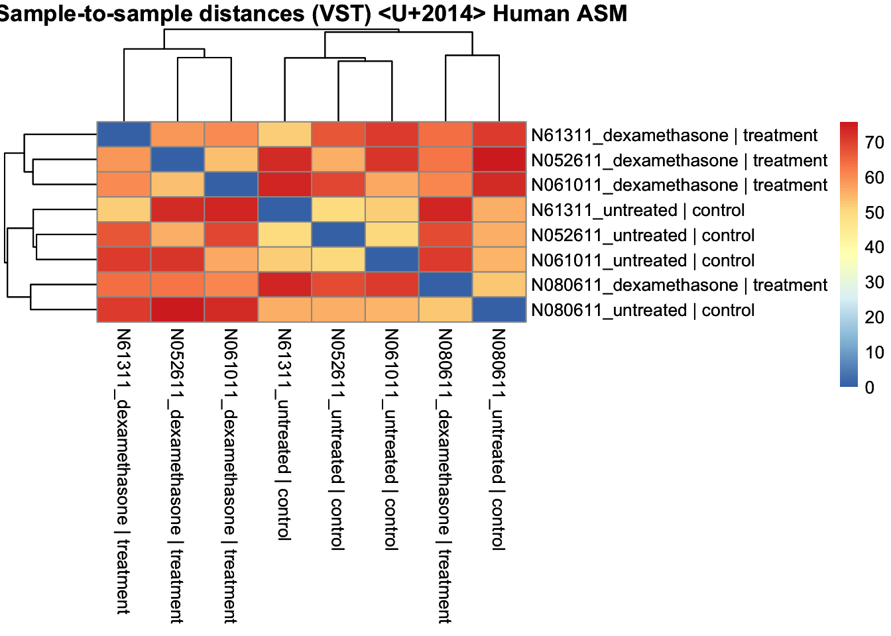
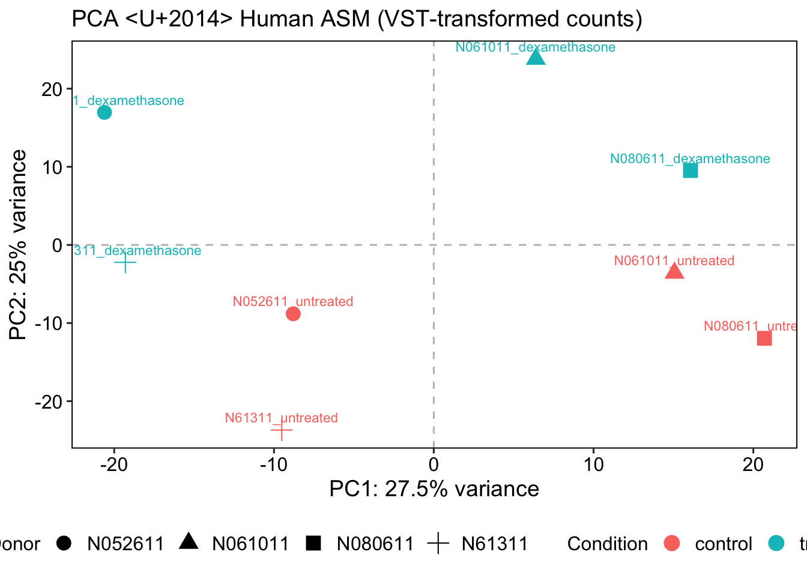
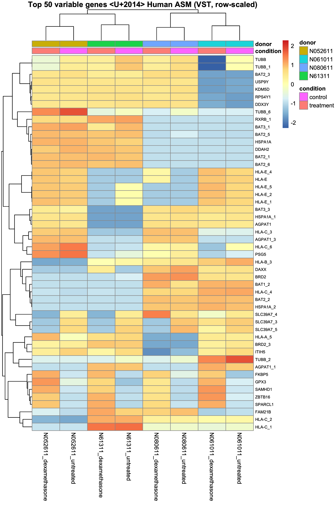

Exploratory Data Analysis
In this section we do not perform statistical tests. The goal is quality control: check count distributions, detect technical outliers, and confirm that samples cluster as expected before committing to differential expression analysis.
Estimate Size Factors
Library sizes (total mapped reads) differ between samples due to technical variation in sequencing depth. DESeq2's median-of-ratios normalisation corrects for this by computing a size factor per sample. Size factors close to 1.0 indicate balanced libraries; values far from 1.0 suggest uneven sequencing depth and warrant investigation.
Code
| sample | size_factor |
|---|---|
| N052611_dexamethasone | 0.667 |
| N052611_untreated | 1.170 |
| N061011_dexamethasone | 0.951 |
| N061011_untreated | 0.911 |
| N080611_dexamethasone | 1.406 |
| N080611_untreated | 1.168 |
| N61311_dexamethasone | 0.897 |
| N61311_untreated | 1.022 |
Distribution of Normalised Counts
Boxplots of log2-normalised counts per sample provide a quick visual check that all samples have comparable expression distributions. After normalisation, boxes should overlap substantially. A sample that is a clear outlier in median or spread may indicate a failed library or mislabelled sample.
📌 Remember: These normalised counts are for visualisation only. Always feed DESeq2 raw integer counts.
Code
normalized_counts <- counts(dds, normalized = TRUE)
counts_norm <- reshape2::melt(
normalized_counts,
varnames = c("gene_id", "sample"),
value.name = "counts"
)
counts_norm <- inner_join(
counts_norm,
as.data.frame(colData(dds)),
by = "sample"
)
dir.create(file.path(git_root, "results", "human", "plots"), recursive = TRUE, showWarnings = FALSE)
distribution <- ggplot(counts_norm,
aes(x = sample,
y = log2(counts + 1),
fill = condition)) +
geom_boxplot(outlier.size = 0.3, alpha = 0.8) +
coord_flip() +
theme_pubr(border = TRUE) +
xlab("Sample") +
ylab("log2(normalised counts + 1)") +
ggtitle("Normalised count distribution — Human ASM")
distribution
Sample Correlation Heatmap
Euclidean distances between VST-transformed samples reveal how similar samples are to each other globally. Samples from the same treatment group (or the same donor) may cluster together. With a paired design, donor structure is often visible here — this is expected and is exactly what the ~ donor + condition model accounts for.
Variance-stabilising transformation (VST) is applied here because raw or normalised counts have heteroscedastic variance (high-count genes have much larger absolute variance).
VST removes this mean–variance dependence, making distances meaningful across the full expression range (Anders & Huber, 2010).
blind = TRUE, the VST is computed ignoring the experimental design. This is recommended for QC and exploratory analysis, where you want an unbiased view of sample similarity.
Use blind = FALSE only when the transformation is feeding into a model that already accounts for the design.
Code
sampleDists <- dist(t(assay(vsd)))
sampleDistMatrix <- as.matrix(sampleDists)
rownames(sampleDistMatrix) <- paste(vsd$sample, vsd$condition, sep = " | ")
colnames(sampleDistMatrix) <- rownames(sampleDistMatrix)
heat <- pheatmap(
sampleDistMatrix,
main = "Sample-to-sample distances (VST) — Human ASM",
fontsize = 10
)
heat
Code
The diagonal is always zero (a sample compared to itself). Dark = similar, light = distant. Look at whether samples group by treatment, by donor, or both. If donor is a strong driver of the distances, that is a signal the paired design is worthwhile.
Principal Component Analysis (PCA)
PCA reduces the high-dimensional expression space (one dimension per gene) to a small number of principal components that capture the largest sources of variance in the data. Inspect whether the treatment separates samples, and whether donor identity contributes to the remaining structure.
If a technical variable (batch, sequencing run, RNA quality) — or, here, donor — dominates PC1, that variance should be accounted for in the design before differential expression analysis (Leek et al., 2010).
Code
pca_data <- plotPCA(vsd,
intgroup = c("sample", "condition", "donor"),
returnData = TRUE)
pct_var <- round(100 * attr(pca_data, "percentVar"), 1)
PCAPlot <- ggplot(pca_data, aes(x = PC1,
y = PC2,
color = condition,
shape = donor,
label = sample)) +
geom_point(size = 4) +
geom_text(vjust = -0.8, size = 3, show.legend = FALSE) +
geom_hline(yintercept = 0, linetype = "dashed", alpha = 0.3) +
geom_vline(xintercept = 0, linetype = "dashed", alpha = 0.3) +
theme_pubr(border = TRUE) +
theme(
axis.text = element_text(size = 12),
axis.title = element_text(size = 14),
legend.text = element_text(size = 12),
legend.position = "bottom"
) +
labs(
x = paste0("PC1: ", pct_var[1], "% variance"),
y = paste0("PC2: ", pct_var[2], "% variance"),
title = "PCA — Human ASM (VST-transformed counts)",
color = "Condition",
shape = "Donor"
)
PCAPlot
Code
How to read this plot. Each point is one sample; points close together have similar overall expression. Check the % variance printed on each axis first — it tells you how much of the total variation that axis carries, so a separation on PC1 means more than the same-looking separation on PC3. Here colour encodes treatment and shape encodes donor. If treatment separates cleanly on one axis while donors are spread along another, that is the classic signature of a paired design: a consistent treatment effect on top of donor-to-donor baseline differences.
Top Variable Genes Heatmap
Clustering the 50 most variable genes across samples provides a gene-level view of the structure in the data. Truly treatment-responsive genes should show block structure by condition. This heatmap also helps reveal whether donor identity contributes strongly to the top variable genes.
Row-scaling (z-score per gene) is applied so that highly expressed genes do not visually dominate over lowly expressed ones.
Code
topVarGenes <- head(order(rowVars(assay(vsd)), decreasing = TRUE), 50)
df_anno <- as.data.frame(colData(vsd)[, c("condition", "donor"), drop = FALSE])
heat_plot <- pheatmap(
assay(vsd)[topVarGenes, ],
cluster_cols = TRUE,
cluster_rows = TRUE,
scale = "row",
clustering_distance_rows = "euclidean",
clustering_distance_cols = "euclidean",
annotation_col = df_anno,
show_colnames = TRUE,
show_rownames = TRUE,
fontsize_row = 7,
main = "Top 50 variable genes — Human ASM (VST, row-scaled)"
)
heat_plot
Code
## quartz_off_screen
## 2📘 Note: Rows are already gene symbols (from the human reference), so they are ready to use directly in the enrichment analysis (script 03) with no ID conversion step.
-
Names ending in
_1,_2, … (e.g.TUBB_6,HLA-C_4): this RefSeq annotation lists some symbols more than once, so R made the duplicates unique by appending a number. They are separate annotated copies/entries of the same symbol, not different genes — and they crowd this list because gene families like the MHC region and the tubulins are annotated many times over. -
Sex-linked genes (e.g.
RPS4Y1,DDX3Y,KDM5D,USP9Y): the four donors are not all the same sex, so these genes are among the most “variable” in the whole dataset — a donor property, unrelated to dexamethasone.
Most-variable is not most-relevant: only a handful of rows here (look for FKBP5,
ZBTB16, GPX3) are actual drug responses. That is why the next notebook tests a
specific contrast instead of trusting variance.
How to read this heatmap:
- Each row is a gene, each column is a sample
- Colours show the z-score (row-scaled expression) — red = higher than average for that gene, blue = lower
- The dendrograms show hierarchical clustering — samples/genes that behave similarly are grouped together
What to look for:
- Clear colour blocks by condition → the treatment has a strong, consistent transcriptional effect
- Whether samples cluster by donor instead of (or in addition to) treatment — a visual argument for the paired design